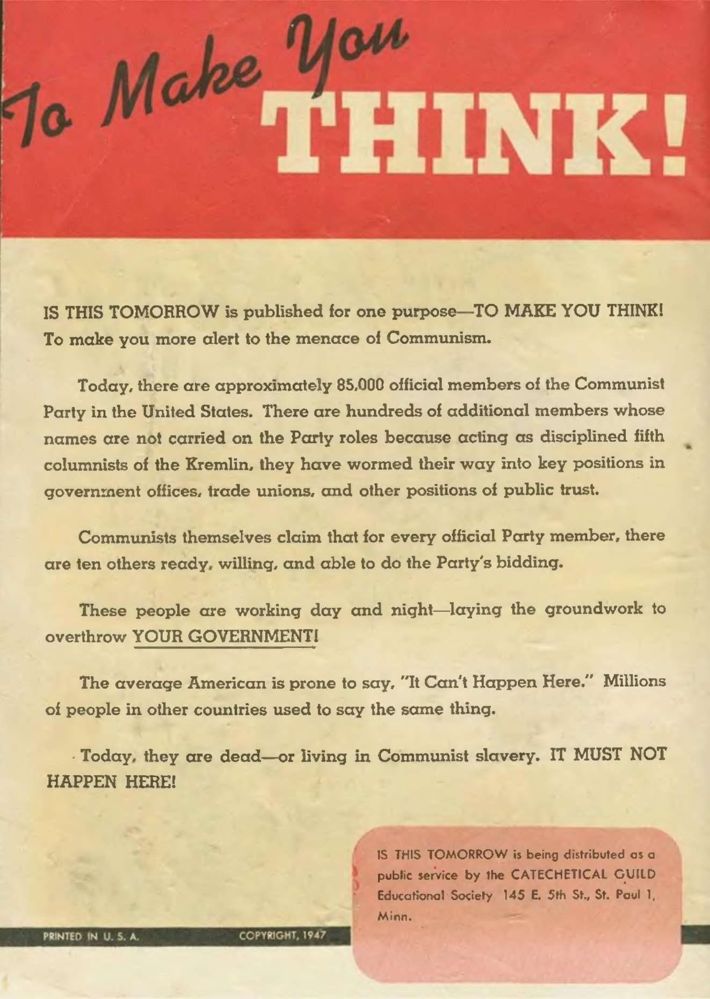

You're the fact-checker. For each part: read the page on the left → get the check right → write 1–2 sentences. Done = 4 green parts (5 checks + 3 short answers), then turn in at the bottom.
Content note: This is real 1947 propaganda. It is one-sided on purpose. Page 5 shows a made-up bombing in Washington.
Word help (tap to open)
- Communism = one party runs the government and owns the farms and factories
- Propaganda = a message made to push you to feel or believe one thing
- Kremlin = the Soviet government in Moscow
- Front = a group that hides who really runs it
- Red Scare = the fear that Communists were hiding inside the U.S.
- Civil liberties = your rights, like free speech

Click the page to make it bigger.
Turn in your work
Your work saves on this device, so you can come back later. Your teacher sees it after you turn it in.
Comic: Is This Tomorrow: America Under Communism! (1947), Catechetical Guild Educational Society, St. Paul, Minnesota. Public domain (copyright not renewed); scan from Wikimedia Commons. Reader pages are the comic's inside cover and pages 1, 3, 5, and 16, and the inside back cover.